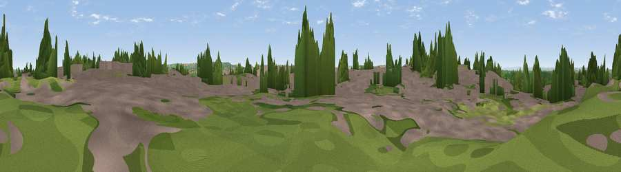

Hopewell Hill
#33862 in England · top 64% of its area beats it · near KingswoodThe view, rendered

A 360° render of this exact spot computed from the terrain model, tree cover and land cover — summer colours, afternoon light, calibrated against photographs of famous viewpoints. Real trees, hedges and buildings will differ in detail.
The panorama
Grey silhouette: terrain skyline in each direction (720 bearings, Earth curvature and refraction included). Dashed green: skyline with trees (+15 m) and buildings (+8 m) as obstacles. Blue strip: how far the ground is visible on each bearing.
Where the view opens
Wedge length = distance to the farthest visible ground on that bearing (vegetation-aware). Rings at 10, 25 and 50 km.
What fills the view
45% built-up · 27% woodland · 25% grassland · 3% cropland
Angular shares of the visible panorama (visual magnitude), not map area. Landscape diversity 0.51 (0–1 Shannon).
Key numbers
More beautiful places nearby
The staircase of upgrades: each row has a higher view potential than everything closer. Driving times are estimates from straight-line distance, calibrated against real road routing — check an actual route before setting out.
| Place | Direction | Drive | Score |
|---|---|---|---|
| Viewpoint near Cadbury Heath | S · 3 km | ~8 min | 54.0 |
| Viewpoint near Harry Stoke | WNW · 4 km | ~9 min | 54.6 |
| Viewpoint near Upton Cheyney | SE · 7 km | ~14 min | 62.1 |
| Viewpoint near Beach | SE · 8 km | ~15 min | 72.5 |
| Hanging Hill | ESE · 8 km | ~16 min | 76.4 |
| Beacon Batch | SW · 24 km | ~39 min | 79.4 |
| Viewpoint near Stinchcombe | NNE · 25 km | ~41 min | 80.5 |
| Garway Hill | NNW · 55 km | ~76 min | 84.6 |
51.46919, -2.51242 · source: dobih hill · position refined by local search. Computed location — check access rights before visiting.